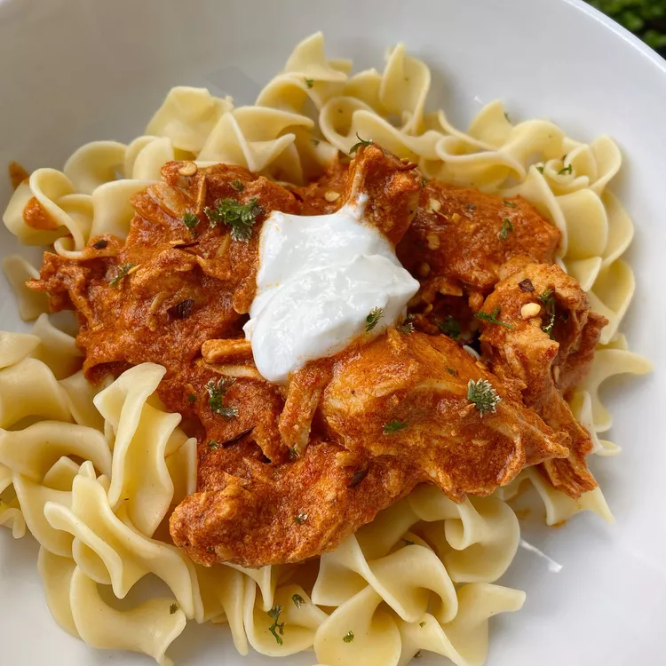

Instant Pot Chicken Paprikash

Description
Whether you choose to prepare this chicken paprikash in
an Instant Pot or on the stovetop, it promises a delicious
meal in under 30 minutes. Utilize a variety of paprika
types—such as smoked, sweet, and regular paprika—to
enhance the flavor profile of the dish.
Ingredients
- 1 (12-ounce) package egg noodles
- 2 tablespoons butter
- 1 tablespoon minced parsley
- 1.5 teaspoons salt, divided
- 1 teaspoon ground black pepper, divided
- 1 tablespoon olive oil
- 3 shallots, thinly sliced
- 6 cloves garlic, coarsely chopped
- 2 cups arrabbiata pasta sauce
- 0.25 cup chicken broth
- 3 tablespoons red wine vinegar
- 2 pounds boneless, skinless chicken thighs
- 1 cup plain yogurt, divided
- 3 tablespoons paprika
Steps
-
Fill a large pot with water, add a pinch of salt,
and bring to a boil. Cook the egg noodles until
they are tender yet firm, about 7 to 9 minutes.
Drain the noodles and mix them with butter, parsley,
0.5 teaspoon salt, and 0.5 teaspoon pepper. Keep the
noodles warm while you prepare the chicken.
-
Set your Instant Pot to the Saute function. Add
olive oil, sliced shallots, and chopped garlic to
the pot. Cook until aromatic, approximately 2 to 3
minutes. Stir in the arrabbiata pasta sauce,
chicken broth, and red wine vinegar.
-
Season the chicken thighs with the remaining teaspoon
of salt and half teaspoon of pepper. Place the seasoned
chicken into the Instant Pot. Secure and lock the lid,
then select the high-pressure setting. Cook for 12 minutes,
allowing 10 to 15 minutes for the pressure to build.
-
Once the cooking time is complete, use the natural release
method for about 10 minutes, then carefully perform a
quick release to let out any remaining pressure.
-
In a small bowl, combine 0.5 cup of yogurt with 0.5 cup
of the sauce from the pot, adding it gradually to temper
the yogurt. Mix in the paprika thoroughly. Pour this yogurt
mixture back into the Instant Pot. Shred the cooked chicken
thighs and serve them over the prepared noodles.
Add a dollop of yogurt to each serving for garnish.
Cook's Tips
- For a creamy texture, you can substitute
sour cream in place of yogurt if preferred.
- Stovetop Preparation: Season the
chicken with 1 teaspoon salt and ½ teaspoon pepper.
Heat a large sauté pan over medium-high heat for 2
to 3 minutes, then add olive oil and the chicken.
Brown the chicken on both sides for 3 to 4 minutes each.
Incorporate shallots, garlic, and paprika, cooking until
fragrant for 2 to 3 minutes. Add the pasta sauce and
vinegar, reduce the heat to low, cover, and let simmer
until the chicken reaches an internal temperature of
185°F (85°C), about 15 to 18 minutes. Meanwhile,
prepare the egg noodles as described above. Once the
chicken is done, drain the noodles and return them to
the pot. Add butter, parsley, and the remaining 0.5 teaspoon
each of salt and pepper, stirring until the butter melts.
Remove the pan from heat, shred the chicken lightly,
and stir in 0.5 cup yogurt. Serve the chicken mixture
over the noodles, adding the remaining yogurt on top.
Enjoy immediately.
-
If you opt for the stovetop method, you can skip
adding chicken broth.
Back to Home